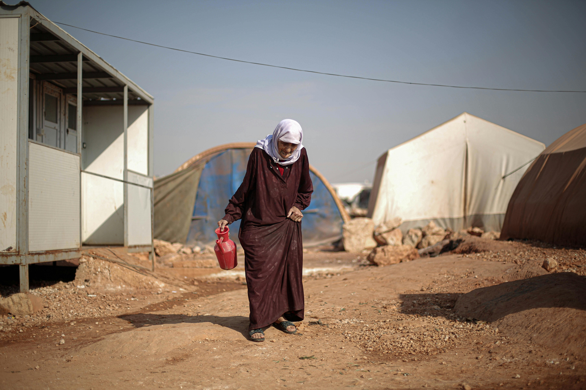
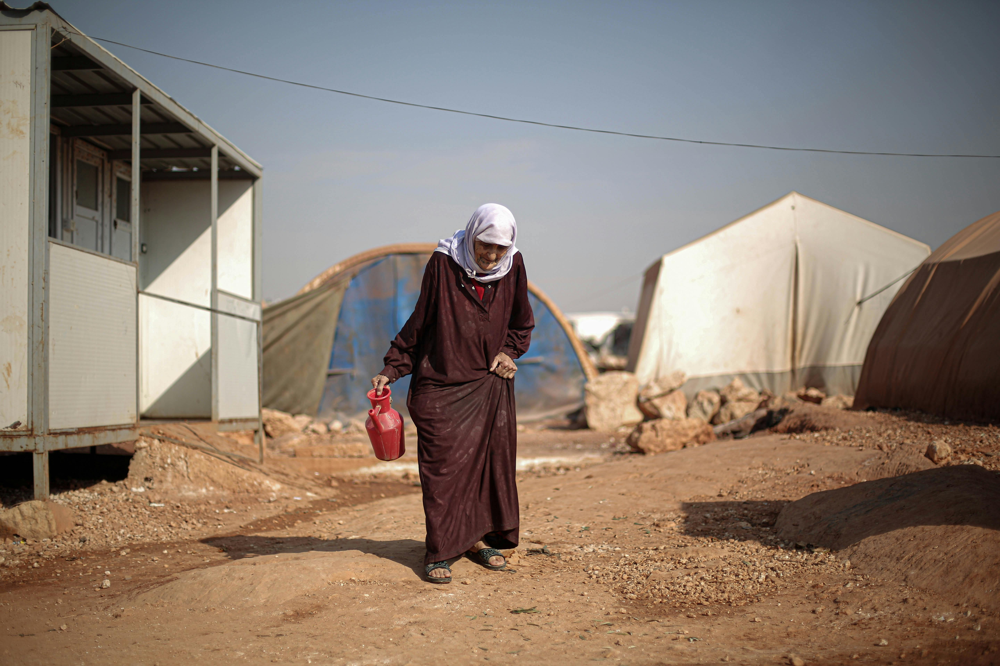

“HopeBridge guided us every step of the way—from housing assistance to cultural integration. Today, we feel safe, welcomed, and part of a thriving community.”


 

HopeBridge Relocation Agency
Bridging the gap between displacement and a brighter future. We connect refugees with vital resources, cultural orientation, and unwavering support, forging new beginnings for those in need.
Start Fundraising